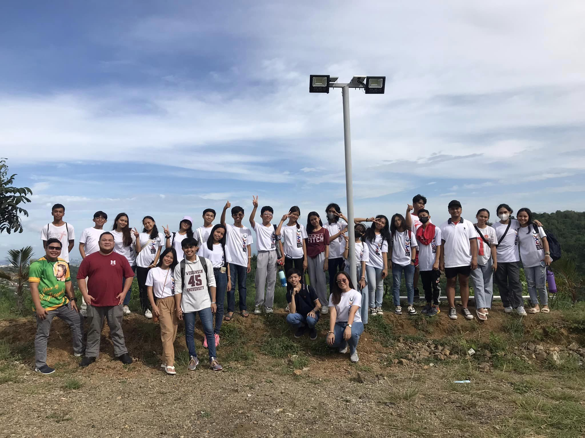
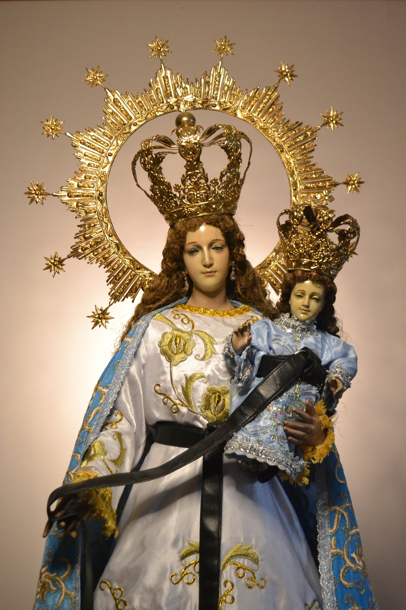
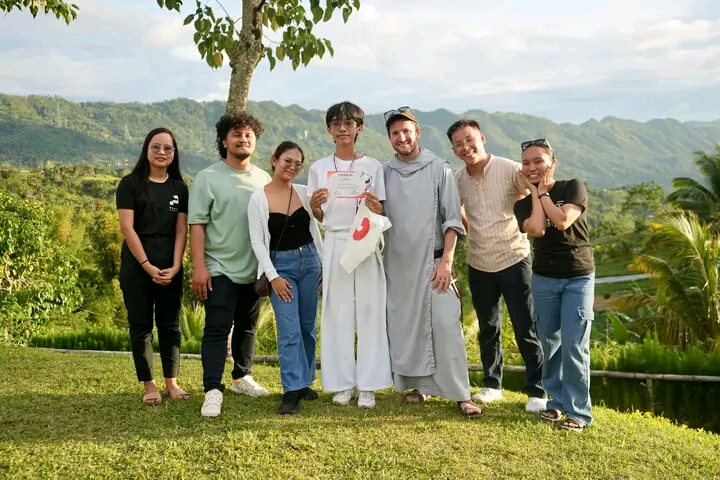
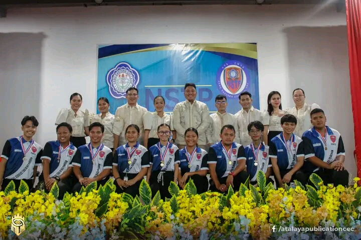
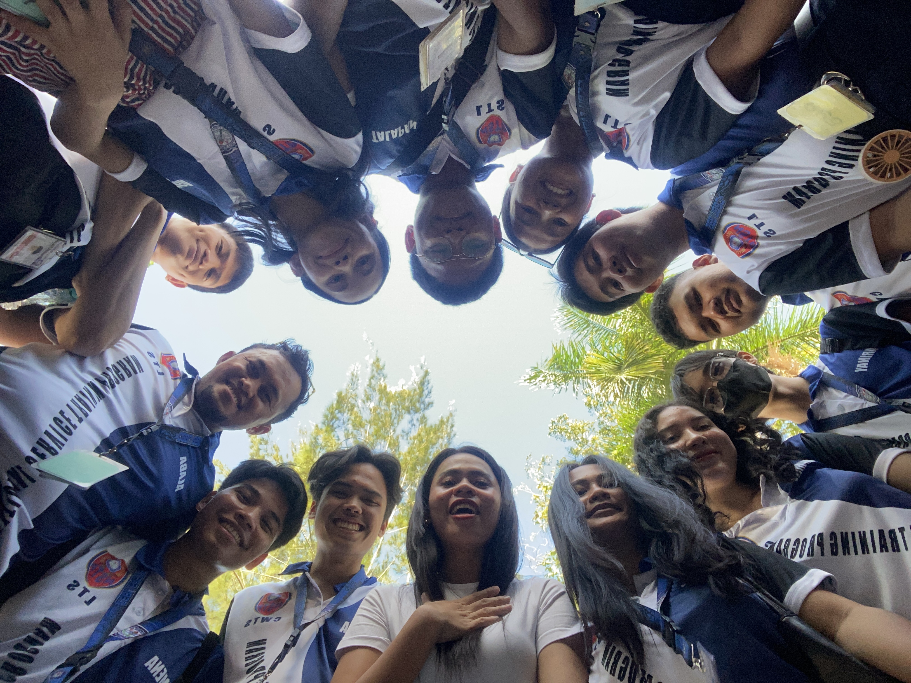

Parish Youth Coordinating Council
I am a member of a Youth Organization in our church called PYCC or Parish Youth Coordinating Council.
Joining such org is not a waste of time. From just trying the org, to becoming commited to serve the
church for the Lord.

The Cebu El Viejo Archdiocesan Shrine of San Nicolas Parish is the "First Church in the
Mainland
Cebu". It may look new now but its actually the modern version of the Church since the
original was
destroyed during WWII.

This is what Its retablo looks like, it is changed a lot as years pass by with new group of
priest arrive int the church.

The Parish Youth Coordinating Council, An org which every church have. PYCC is under the
DYCC, also known as the District
Youth Coordinating Council. And the San Nicolas Parish is under the jurisdiction of the
District 2. This org is helping the
church when it needs man power and and the church supports its own PYCC.
Religious Images



- The Our Lady of Consolation
- The patroness of the Church, a Roman Catholic title for the Blessed Virgin Mary
,venerated as a source of confort and strength, particularly for those in times of
difficulty.
A patron of Augutinian orders.
- San Nicolas de Tolentino
- The Patron of the Church, an italian saint and mystic, a simple priest and Augustinian
friar,
known for his devotion to the souls in Purgatory and his active ministry to the poor and
sick. The patron
saint of souls in Purgatory.
- Sto. Nino Tiniente dela Guardia
- Sto Nino Tiniente dela Guardia, Sto Nino is very known in Cebu City. But did you know that
there are
two Sto Nino with each has a title and has a significant role every Sinulog. The other one
is the El Capitan
Heneral, a Sto. Nino in the Basilica Menore del Sto Nino.
Alpha Youth Faith Hub



The Alpha Youth Faith Hub is a free org where you will need to attend 10 sessions
to make you an official member of the group, I joined this org because my friend told me
it is fun and also a lot of things can be learned inside the org. I joined on Febuary 09, 2025
and I became
an official member and graduated alpha Batch 6 on March 30, 2025.
National Service Training Program office



I actually dont want to be an Officer because I know how hard its job can be.
But I always thought about stepping out of my comfort zone and try new things that can
help me grow. And so I did, Even with hesitation but with my friends words I was able to raise
my hands
and walk forward in front of every NSTP Students. Its very scary and my legs are trembling with
fear and
my legs became weak when its the speech part of the election. I swallowed my fear that time and
started
speaking and while looking at the other candidates, I feel so little because I can see in their
face and posture
they really do have the powerto became the president of the whole NSTP Students. Then the
picking started.
I was realy happy and a bit sad when I notice that the other candidate get a lot of vote. And I
thought that was over,
then the NSTP Coordinator said that there are 3 position of president and I was one of the 3
president that was selected and
later on, I just realized how good it is to step out of the comfort zone. I learned a lot of
thingsand experience a lot of things.